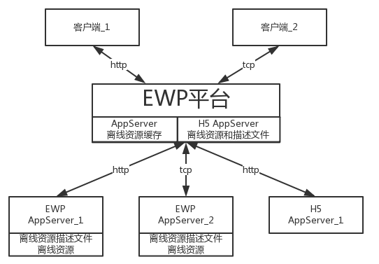
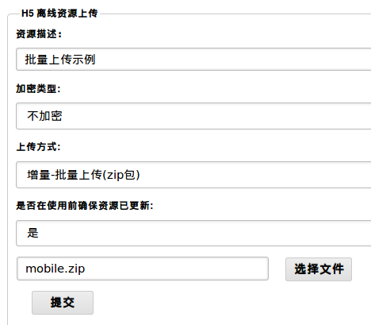
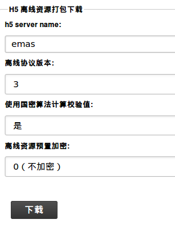

为支持多App服务的功能，EWP做了一些修改，本文将介绍如何通过配置和操作，来实现多App服务的。
关于EWP5.3的多App服务，只有离线3(包含)以前的版本是可用的。

图2-1 多App服务器结构
每一个EWP AppServer都管理自己的离线资源文件和描述文件，当客户端下载离线资源时，EWP平台会根据配置选择与AppServer的连接方式，去获取对应AppServer的离线资源。
由于H5 AppServer的特殊性，其离线资源需要打包上传到EWP平台，具体操作在后面介绍。
转发服务的配置，统一配置在ewp.conf文件的{offline, Options}中。下面分别介绍EWP平台和EWP AppServer的配置。
EWP平台离线资源的配置在ewp.conf文件的{offline, Options}中。
根据需求，在Options中追加{redirect, ReOptions}配置项，可实现对多AppServer的转发功能。
%% configurations for EMP offline
{offline, [
...
{local_path, "/var/www/apps/ebank/public/resources"}, %% 离线资源存储绝对路径(与H5路径不同)
{multi_h5_path, "/var/www/apps/ebank/public/h5_resources"}, %% H5离线资源存储绝对路径(与本地路径不同)
{redirect, [
%{handler, Mod}, %% 全局指定转发处理模块，可自定义转发逻辑，
%% 配置此选项后，下面的配置项无效
{emas, [ %% 配置需要转发请求的AppName
%% -----------------转发连接相关功能项配置--------------------
{host, "192.168.64.220:4003"}, %% AppServer的主机地址
{type, ewp}, %% App服务类型ewp/h5
%{handler, Mod}, %% 指定转发处理模块，可自定义转发逻辑，
%% 不配置时使用EWP默认逻辑。
{protocol, http}, %% 基于哪种协议进行下载转发。
{tcp_port, 5090}, %% 使用tcp协议转发时使用的端口号。
{max_connections, 100}, %% 该App下载资源占用的最大连接数。
%% -----------------转发缓存相关功能项配置--------------------
{cache, true}, %% 缓存功能开关。
{cache_expiry, 4000}, %% 缓存有效期。
{max_mem, 102400}, %% 缓存的最大内存。
{pool_size, 4}, %% 工作进程池大小。
{worker_timeout, 10}, %% 回调处理的超时时间。
{opaque, [{app, emas}]} %% 回调缓存读取文件的自定义参数。
]}
]}
]}.
通过配置项，可自定义离线资源的路径，配置要求：路径必须为绝对路径并且有读写权限，同时，两个路径配置的路径不能相同。
"/var/www/apps/ebank/public/resources" "/var/www/apps/ebank/public/h5_resources"全局配置生效后，redirect下的其他配置均不可用了，优先使用全局配置的模块，结构如下：
{redirect, [
{handler, Mod} %% 全局指定转发处理模块，可自定义转发逻辑
]}
在转发功能里，需要用到2个回调函数：
1.获取远程离线描述文件
get_remote_desc(From, Ver, Platform, Resolution, Type) -> {ok, ServerJson} | {error, Reason}
Types:
From = term() %% 客户端传送的AppServer标识，格式可自定义
Ver = "3" %% 离线版本，"0"|"1"|"2"|"2.1"|"3"，最新版本为"3"
Platform = string() %% 平台，"android"|"iphone"|"wp"|"qt"
Resolution = string() %% 分辨率，如："320*480"
Type = sca | normal %% 算法校验方式(国密|非国密)
ServerJson = string() %% Json结构的描述文件内容
Reason = string() %% 错误提示
2.获取远程离线资源
get_remote_resource(From, FilePath) -> {ok, Res} | {error, Reason}
Types:
From = term() %% 客户端传送的AppServer标识，格式可自定义
FilePath = string() %% 文件路径
Res = binary() %% 文件内容
Reason = string() %% 错误提示
配置结构为：
{redirect, [
{AppName1, [ %% AppName1(全局唯一)
Options %% 配置项
]},
{AppName2, [ %% AppName2
Options %% 配置项
]}
]}
"192.168.64.220:4003" "http://" + Host + ":" + PortNum或"http://" + Host在转发功能里，需要用到2个回调函数：
1.获取远程离线描述文件
get_remote_desc(From, RemoteConf, Ver, Platform, Resolution, Type) -> {ok, ServerJson} | {error, Reason}
Types:
From = AppServerName() %% AppServerName
RemoteConf = Options() %% AppServer所有配置项
Ver = "3" %% 离线版本，"0"|"1"|"2"|"3"，最新版本为"3"
Platform = string() %% 平台，"android"|"iphone"|"wp"|"qt"
Resolution = string() %% 分辨率，如："320*480"
Type = sca | normal %% 算法校验方式(国密|非国密)
ServerJson = string() %% Json结构的描述文件内容
Reason = string() %% 错误提示
2.获取远程离线资源
get_remote_resource(From, RemoteConf, FilePath) -> {ok, Res} | {error, Reason}
Types:
From = AppServerName() %% AppServerName
RemoteConf = Options() %% AppServer所有配置项
FilePath = string() %% 文件路径
Res = binary() %% 文件内容
Reason = string() %% 错误提示
如果启用了EWP默认转发配置，那么EWP AppServer的离线资源服务也需要配置，目的是为了在AppServer离线资源更新时，能够及时清空EWP平台的缓存。配置如下：
%% configurations for EMP offline
{offline, [
...
{platform_host, "192.168.64.221:4002"}
]}.
Options参数配置以及功能：
H5 AppServer的离线资源需在EWP管理后台上传，H5离线资源上传入口: 登录EWP平台的管理后台 -> 资源管理(或开发人员菜单) -> H5 App离线存储 -> H5 离线资源上传
上传方式：增量-批量上传、增量-单个文件上传、全量上传
增量-批量上传(zip包)，zip包格式：AppName.zip/AppName/*增量-单个文件(文件)，文件相对路径格式：AppName/*全量上传
上传方式:完全(zip包)，zip包格式：AppName.zip/AppName/*
功能：删除原有H5资源，将上传zip包内的内容添加到对应H5 Server离线资源中。

图4-1 H5信息资源上传
上传成功后，会在public/h5_resources/desc和public/h5_resources/sca_desc这两个路径下生成H5 App相关的离线资源描述文件。并将离线资源保存在public/h5_resources路径下。
在上传了H5 AppServer的信息资源之后，就可以下载H5的预置资源了。
H5离线资源下载入口: 登录EWP平台的管理后台 -> 资源管理(或开发人员菜单) -> H5 App离线存储 -> H5 离线资源打包下载

图4-2 H5离线资源下载